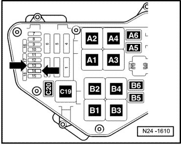
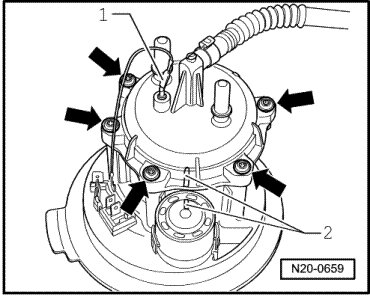

Fuel Filter, Replacing
Fuel Filter, Replacing
Special tools, testers and auxiliary items required
• Wrench (T10202)
Requirements
• The fuel tank must be drained --> [ Fuel Tank, Draining ] .
• Fuses - 13 - and - 14 - - arrows - must be removed from their sockets.

CAUTION!
Fuel supply lines are under pressure! Wear protective goggles and protective gloves to avoid damage and contact with skin. Before removing from hose connection wrap a cloth around the connection. Then release pressure by carefully pulling hose off connection.
Procedure
- Read safety precautions before beginning work --> [ Safety Precautions ] .
- Cut open carpet on left side from point - A - to point - B - in pre-cut area - arrow -.

- Remove nuts - 1 - from cover. If necessary, unbolt backrest support - 2 - or support mounting. --> Body Interior 72 Removal and Installation

- Remove locking ring from left sender flange using fuel tank sender wrench (T10202).
- Remove flange from left side of tank.
- Empty fuel filter housing.
- Mark installation position of filter cover - 2 - using colored felt tip marker pen.

- Disconnect ground wire - 1 - and unbolt filter cover - arrows - from housing.
If filter insert is to be replaced, ensure that the ground connection contacts are not bent and have sufficient pretension.